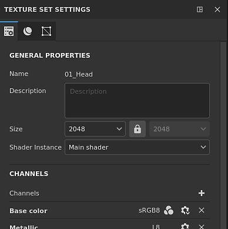
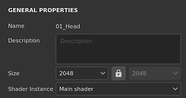
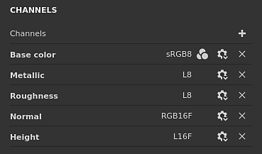
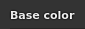
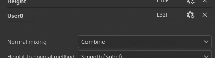
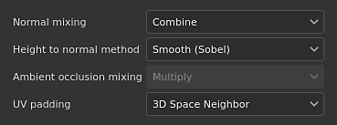
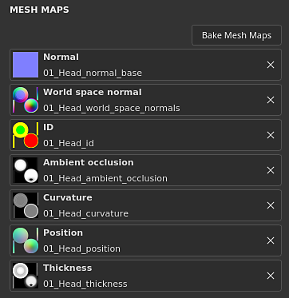

Button / Icon
Texture Set settings

The Texture Set settings control the parameters of the currently selected Texture Set. This is where the resolution, channels and associated mesh maps can be managed.
General properties

| Setting | Description |
|---|---|
| Name | Name of the Texture Set. Inherited for the material name assigned on the 3D model. |
| Description | Text field that allows to add information about a Texture Set. This text is displayed in the Texture Set list and Baking windows. |
| Size | Controls the channels resolution in pixels inside a Texture Set. To use non-square resolutions (for example 2048x1024) disable the lock button between the two dropdowns. Texture Set resolutions are dynamic because of the non-destructive workflow. This means it is possible to work at a low resolution to get good performances and then use an higher resolution later to get better quality. Inside the application the maximum resolution of a channel is 4096x4096 pixels, while when exporting the maximum is instead 8192x8192 (if supported by the GPU). Changing the resolution may trigger a long computation of the engine. |
| Shader instance | Define which Shader to use to render the given Texture Set in the viewport. |
Channels
Channels list

The list can be modified at any timeby adding or removing channels (unless overridden by the Material Layering workflow).
|
|
Description |
|---|---|
|
Add channel
|
Click on this button to add a new channel to the list. The pop-up menu that opens is split into three categories:
Note
There is not limit in how many channels can be added, however too many channels can severely impact performances and will require more memory. |
|
Remove channel
|
Remove a channel from the list.
Note
The painting information inside the project is not deleted with the channel, so the channel can be added back later if needed to recover the texturing (after a recomputation). |
|
Channel name 
|
The name of a given channel. User channels can be renamed by double-clicking on the current name: 
|
|
Channel Settings
|
This button opens the channel's settings menu with several actions. The first list of action control the storage type and precision of the channel:
Note
The storage type is not a color space/gamma control. The data used for storing the information of a channel (for example sRGB8 or L32F) has no effect on the way the application will read them. For example the Roughness channel will still be considered as data/raw, and the Base Color will still be considered as gamma corrected. The last action of the menu can be used to enable or disable color management on the channel:
|
|
Color managed
|
If present, indicates the channel is color managed. Only user channels can be marked as color managed or not, other channels behavior is fixed. For a detailed list of which channels are color managed or not, see: Color management. |
Mixing settings

These settings control various behavior on how channels are generated, notably how channels are combined with the baked textures (mesh maps).
|
Setting |
Description |
|---|---|
|
Normal mixing |
Controls how the "baked normal map" should be combined with the "Normal" channel. Possible values are:
Note
This setting may be disabled if the channel is missing in the channels' list. If the channel is missing, the default mixing value is used. |
|
Height to normal method |
Controls which method to use to convert the height channel into a normal map. Possible values are:
|
|
Ambient occlusion mixing |
Controls how the "baked ambient occlusion" should be combined with the "Ambient Occlusion" channel. Possible values are:
Note
This setting may be disabled if the channel is missing in the channels' list. If the channel is missing, the default mixing value is used. |
|
UV padding |
Controls how the padding outside the UV island is generated. Possible values are:
Note
This padding setting is saved per Texture Set and taken into account during the texture export and visualization into the viewport. Because of how the the 3D space neighbor works it cannot be be used with the normal channel and will use the 2D version instead. |

Mesh maps

The Mesh maps are baked textures specific to the mesh and Texture Set used to augment the quality of the texturing with the help of filters, Smart Materials and Smart Masks. For more details see the baking documentation.